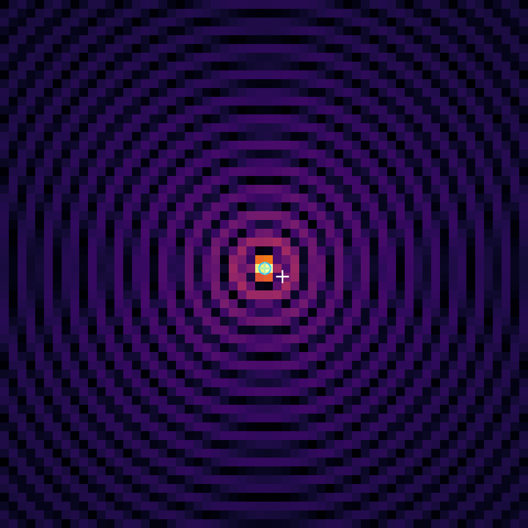
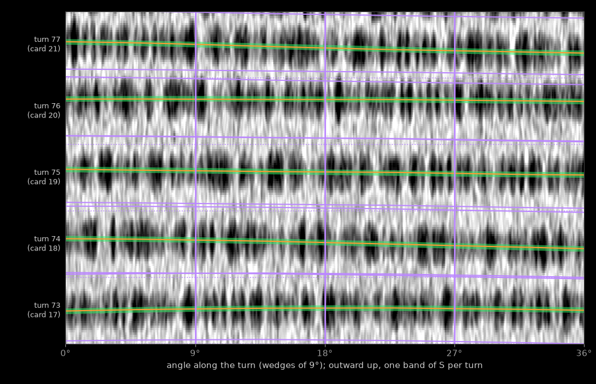
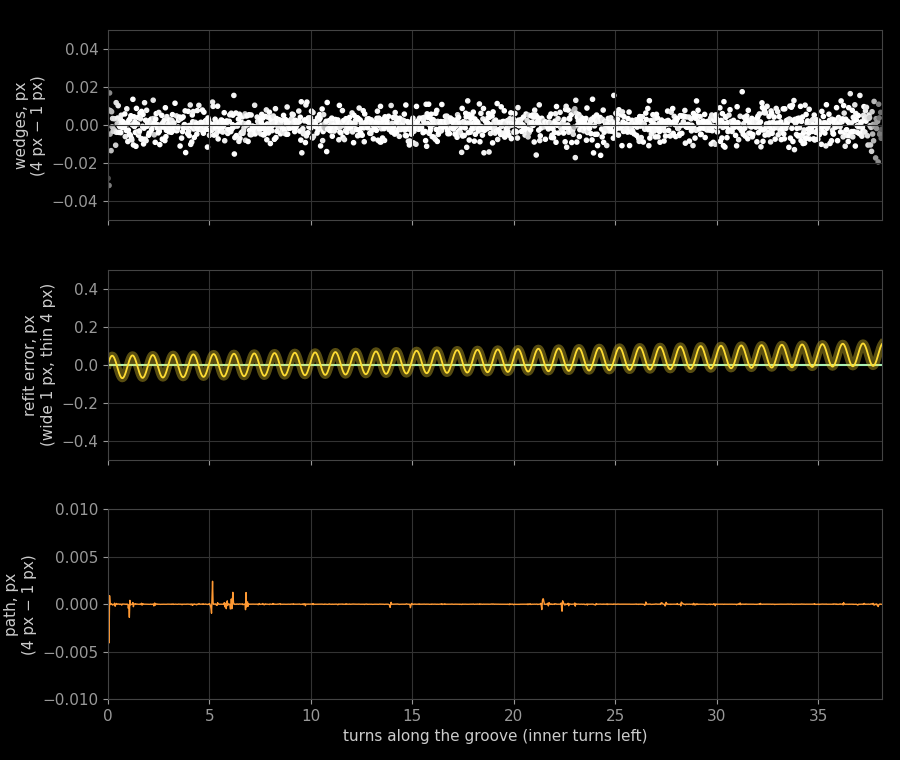
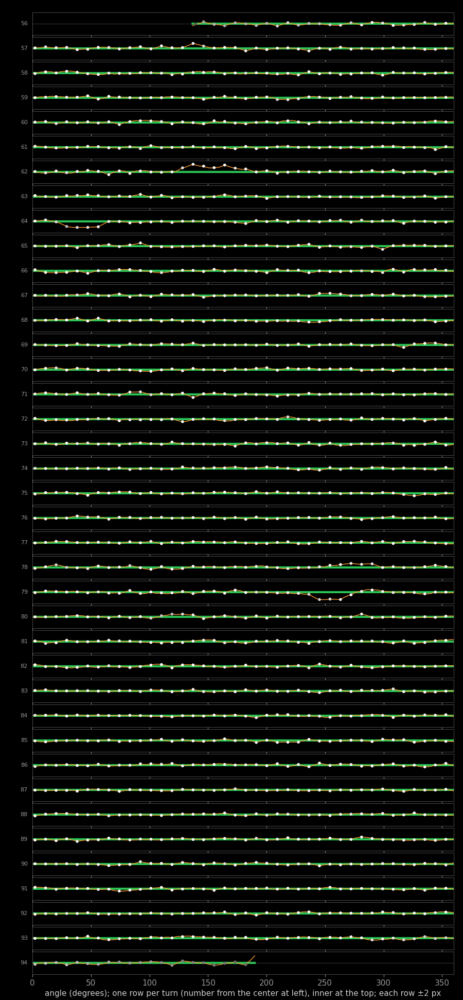

Spiral: the procedure on a simulated card
Each step of the procedure run on an idealized, simulated card, with its result and how well it works over many cards.
Built by python build_card.py (cardlab/, Python) and committed as static images.
Showcase: preset Typical, seed 1. Alternatives tried for each step: Considered and dropped, Part 3.
Colors, in every figure: white input (hand mark, nominal spacing) ·
cyan low-res estimate · yellow the corrected geometry (step 4) ·
orange path and read-out sound · green true groove and true sound ·
pale green true geometry (center, spacing, ideal spiral) · magenta wrong groove (in step 4, the sectors the check drops) ·
grey raw measurements (the wedges) · violet annotations (detail-spot boxes, cartoon labels, the rectangle's rows and wedge edges)
Summary over runs
| Preset (seeds) | Hand mark | Center, step 3 | Center, step 4 | Spacing, step 4 | Path rms | Wrong groove | Not cut | Sound corr. |
|---|
| Typical (1, 2, 3, 4, 5) | 6 px – 26 px | 0.21 px – 0.42 px | 0.06 px – 0.38 px | -0.01% – +0.01% | 0.15 px – 0.21 px | 0.0% | 0.5% – 0.6% | 0.882 – 0.905 |
| Loud (sound often cuts out) (1, 2, 3, 4, 5) | 6 px – 26 px | 0.21 px – 0.42 px | 0.06 px – 0.38 px | -0.01% – +0.01% | 0.16 px – 0.21 px | 0.0% | 7.7% – 7.8% | 0.920 – 0.939 |
| Hard (more grain, drift, loud sound) (1, 2, 3, 4, 5) | 13 px – 53 px | 0.20 px – 0.72 px | 0.17 px – 0.50 px | -0.04% – +0.07% | 0.43 px – 1.80 px | 0.0% – 0.4% | 4.7% – 4.8% | 0.788 – 0.822 |
| Clean (no grain) (1, 2, 3, 4, 5) | 6 px – 26 px | 0.21 px – 0.41 px | 0.05 px – 0.37 px | -0.01% – +0.01% | 0.06 px – 0.12 px | 0.0% | 0.5% – 0.6% | 0.948 – 0.973 |
| Ezra-like (quieter, a tone, more turns) (1, 2, 3, 4, 5) | 6 px – 26 px | 0.10 px – 0.28 px | 0.01 px – 0.15 px | -0.00% – +0.00% | 0.13 px – 0.14 px | 0.0% | 0.0% | 0.861 – 0.883 |
Errors against the simulated card's truth, full-resolution px. Ranges over the seeds listed. Step 3: the low-res spiral; step 4: the corrected one.
0a. The low-res card, masked to the hand-marked annulus
The simulated card's height map (typical preset; parameters at the end of the page), averaged down to 1024² (×5.42), times a soft mask from the hand-marked circles (dashed), minus its mean, unit rms. An idealized card: flat, grain only.
White + hand mark, cyan step 3's center, yellow step 4's, pale green + true center. Violet boxes: the 16 detail spots of step 5a (spread evenly along the groove); click one to show it there.
Hand mark 12.1 px from the true center.
1. FFT of the masked card procedure →

1a. FFT of the card × 1/√r about the mark (central half of log |FFT|)
Weighting by 1/√r keeps the outer turns from dominating. The rings sit at radius N/spacing. Dashed: step 2's search window, 0.5–1.5 × the radius expected from the nominal spacing; cyan: the peak.
2. Spacing: the peak of the radial profile procedure →

2a. Radial profile → spacing
Mean log |FFT| per radius, smoothed by a Gaussian of σ = 1 bin; the spacing is the peak inside the window (grey: 0.5–1.5 × the expected radius), refined below a bin by a parabola after removing the local slope. A peak on the window's edge, or less than twice its background, fails the card.
Radius in the FFT along the top, the groove spacing it stands for along the bottom. Shaded: the search region, 0.5–1.5 × the radius the nominal spacing predicts; white dashed: nominal. Inset (arrow: its place on the peak): the sub-bin fit, ±2.5 bins about the peak bin: the 5 bins used (dots) minus the trough line and the parabola (cyan dotted), whose vertex is the measured spacing (cyan), beside the true (pale green) and nominal (white dashed).
Measured 29.039 px (+0.11% vs. true 29.007).
3. Center and spiral phase: the spiral coherence map procedure →

3a. The spiral coherence map
Z(c′) = −Σ v·e−i(|p−c′|/b − angle(p−c′)) scores how well a spiral centered at c′ lines up with the grooves; one FFT correlation gives it at every pixel. Around the true center: a bright spot with fainter rings half a spacing apart.
The center is the map's center of point symmetry near its brightest pixel (robust to a slightly stretched scan, where the spot splits into lobes); the spiral phase is the angle of Z there.
Shown: |Z| around the answer. Center 0.22 px from the truth (hand mark 12.1 px); coherence 0.54.
4. Geometry correction: coarse wedges procedure →

4a. How to read the offsets (a cartoon)
Top: a toy card with 6 turns. The rectangle follows the initial estimate from steps 1–3 (cyan, dashed), here off in all three ways: center by 0.2 spacing, spacing by 8%, spiral phase by 0.6 rad. Each column is a radial line ±S/2 about it (grey bars). Where the line meets the groove (green), the distance from the cyan spiral, outward positive, is the column's offset (violet).
Second: the offsets along the rectangle, unrolled; every turn of the groove shows up, one spacing apart. Third: the bold curve's three parts (violet): the center error gives one wave per turn, the spacing error a slope, the spiral-phase error a constant. They add up to the bold curve; the fit (4c) fits exactly this.
Bottom: what 4c plots. A column can't tell which turn it sees, only where the nearest groove sits, so the offsets are taken modulo the spacing, in −S/2…+S/2; when a curve passes ±S/2 the next turn is nearer and it wraps around.

4b. The unrolled rectangle and its wedges
The annulus unrolled along the low-res spiral: columns at equal steps in angle θ (17,232 per turn at full resolution), i.e. equal steps in time; rows are the radial offset from the spiral (1 px, outward up); rows −S/2..S/2 cover every annulus pixel exactly once. Sampled (bilinear) only when needed. Shown: the same 4 wedges (36°) of 5 consecutive turns about the middle one, stacked outward up, so the stack tiles the card (stretched vertically). Turns are numbered from the spiral's center (r = turn × S); “card” counts from the first whole turn read.
A wedge is 1/40 turn of columns (between the violet vertical lines). Per column, z = Σ v·e−2πi d/S over exactly one period of rows; summed over the wedge, the angle of Z is the groove's offset (mod S), |Z| its strength. This step reads every 4th column on the rows about the spiral (violet dotted); step 5 reads every column on rows midway between the lands (violet solid). Orange: the path; green: the true groove.
657,250 columns (164,313 in this step), 1,526 wedges, 38.1 turns.

4c. The geometry fit: residuals before and after
The fit updates the spiral's globals (center, spacing, spiral phase) from the coarse wedges: grid search, then robust least squares on the residuals wrapped to ±S/2 (4a's model: a one-turn wave for the center, a slope for the spacing, a constant for the spiral phase). Step 3 is already so close on this card (center 0.22 px off) that before and after would look alike, so this figure starts from a deliberately worse initial estimate: center 5.8 px off, spacing +0.36%, spiral phase 0.3 rad.
Top, before: each wedge's offset from that estimate, mod S (grey, brighter = higher |Z|), with the fitted model (yellow; under it, pale green, the same curve for the true geometry) and the true grooves (green). Middle, after: offset minus model, wrapped, on the same scale: the wave and the slope are gone; what is left is the groove's own drift from turn to turn. Bottom: the consistency check, the residuals' median in each of 40 angular sectors (9°) over all turns; a sector outside the band (violet, median ± 3 MADs) would be dropped and the fit repeated. Here none is.
From this start: residual 6.5 → 3.3 px rms; center 5.8 → 0.11 px from the truth, spacing +0.36% → +0.021%. From step 3's estimate (the pipeline): center 0.22 → 0.06 px (moved 0.18 px); spacing +0.006%; spiral vs. grooves 3.46 px rms; 0 of 40 sectors dropped.

4d. The consistency check on a damaged card
The same card with a damaged patch: a 30° sector (60°–90°) whose grooves look clean but sit S/3 further out, as on a warped or lifted patch. Its wedges have high |Z|, so the plain fit follows them part way. Top: residuals after the plain fit; the patch's wedges (magenta) stand out at the same angle on every turn. Middle: the sector medians against the final model; the check drops the sectors outside the band (magenta; the first round drops the three inside the patch, the second the one it overlaps at 54–63°) and fits again. Bottom: the final fit: the rest is flat and the patch sits S/3 off, ignored.
Center from the truth: plain fit 1.06 px, with the check 0.05 px (4 sectors dropped); undamaged 0.06 px.

4e. The same, relative to the true spiral
Everything minus the true geometry (pale green, now the zero line); possible only on a simulated card. Yellow: what is left of the fit's error, a small one-turn wave (center) and slope (spacing); below, alone at ±1 px. Grey: the wedges; green: the groove's drift.
The error is random, different on every card, and nothing in the data can remove it: a one-turn wave or slope that is really in the measured offsets can't be told from a center or spacing error. Two things put one there by chance, about equally: the wedges' measurement noise (the grain; each wedge's offset is off from the true groove at its angle by a fraction of a px) and the groove's drift (a few px from turn to turn, whose own one-turn wave over all turns is a few hundredths of a px). The robust loss weights the wedges by how far they sit from the model, so the error is not simply either part's least-squares fit. It is tiny next to one turn's rise in radius (S per turn): plotted as radius against θ it would not show at all, only after subtracting the true spiral as here. And step 5's path follows the groove itself, so it hardly matters downstream.
Fit error 0.05 px rms (center 0.06 px, spacing +0.006%); wedges vs. the true groove 0.24 px rms; drift 3.46 px rms.

4f. Every 4th column: before / after
Until Nov 2026 this step read every column, as step 5 does. But the fit only needs the wedges' offsets, and its error is set by the groove's drift (4e), not by how densely the wedges are sampled: a wedge's offset from 1/4 of its columns differs only by noise, which the least-squares fit over ~1500 wedges averages away. So this step reads every 4th column (every 4 px of the outer turn; the same wedges and rows), and step 5 reads all of them.
Top: each wedge's offset from every 4th column minus from every column (grey, brighter = higher |Z|). Middle: the fit's error against the true spiral (pale green = 0), before (yellow, wide and faint) and now (yellow, thin): they lie on top of each other. Bottom: the path, now minus before (orange). Note the scales: ±0.05 px top, ±0.01 px bottom.
This card, before → now: columns 657,250 → 164,313; wedges differ by 0.005 px rms; corrected center 0.0597 → 0.0599 px, spacing +0.0060% → +0.0060%; path rms 0.1736 → 0.1736 px (paths differ by 0.0001 px rms); steps 4–5 1.81 → 1.38 s. On all 20 cards: the table below.
Every 4th column vs. others (experiments/coarse_pass1_results.md). Medians over the 20 cards, typical / loud / hard / clean; time for steps 4–5 only.
| Step 4 columns | Corrected center, px | Path rms, px | Hard: wrong groove | Sound corr. | Step 4 | Steps 4–5 |
|---|
| every column (1 px, before Nov 2026) | 0.126 / 0.130 / 0.197 / 0.129 | 0.146 / 0.165 / 0.787 / 0.070 | 0.08% | 0.896 / 0.934 / 0.810 / 0.960 | 0.58 s | 1.15 s |
| every 2nd (2 px) | 0.126 / 0.130 / 0.197 / 0.129 | 0.146 / 0.165 / 0.793 / 0.070 | 0.08% | the same | 0.32 s | 0.89 s |
| every 4th (4 px, now) | 0.126 / 0.130 / 0.197 / 0.129 | 0.146 / 0.165 / 0.796 / 0.070 | 0.10% | the same | 0.18 s | 0.76 s |
| every 8th (8 px) | 0.126 / 0.130 / 0.196 / 0.129 | 0.146 / 0.165 / 0.814 / 0.070 | 0.12% | the same | 0.12 s | 0.70 s |
Card by card, every 2nd or 4th column changes the corrected center by less than 0.001 px (every 8th: 0.008) and the path rms by at most 0.005 / 0.008 / 0.026 px, all on hard seed 1.
5. The groove's path at full resolution procedure →

5a. Detail at full resolution (256 px)
Orange: the path; magenta: wrong groove — none on this card; green: true centerline. Darker = deeper: the depth follows the sound.
Click a violet box in 0a to choose the spot.

5b. The rows on the card
A full-res crop at the default detail spot: violet this step's rows (one period about the midway line between the lands, along each turn) and the wedge edges (radial; one turn's band sits beside the next, so its edges come in pairs); green (wide) the true groove; orange the path.
Every column; each column's rows centered midway between the lands either side of the groove, at (groove + mean of the turns either side) / 2, so the window's ends fall in the land. Each column keeps the groove nearest the corrected spiral (within ±S/2), so it can't slip to another turn.

5c. The rectangle around the spot
Rows across the groove (1 px, outward up, ±1.6 S), each column's mean removed. Yellow: corrected spiral (±S faint); violet: this step's rows; orange: the path; green: true groove.

5d. The path: offset from the corrected spiral
Orange: the path; green: the true groove, both relative to the corrected spiral. Between wedge centers the path interpolates the wedges' phasors |Z|eiφ, so weak wedges count little.
Path rms 0.17 px; wrong groove 0.00%.

5e. One row per turn
Each row is one turn, angle 0–360° left to right (inner turns at the top, ±12 px per row), offsets from the corrected spiral: green (wide) the true groove, grey dots the wedges, orange the path. The drift is smooth along each row and changes from row to row.

5f. Errors, one row per turn
The same rows, each estimate minus the truth (green: zero), ±2 px per row: orange the path, grey dots the wedges.

5g. Path error per turn
Per turn, rms distance from the path to the nearest true groove centerline (dotted: S/4). Magenta: share of the turn on the wrong groove — none on this card.
6. Sound: the groove's depth along the path procedure →

6a. Depth at the groove bottom
Orange: the sound read out; green: the true sound. The land at ±S/2 minus the path's bottom (each ±3 px), relative to its own 300-px average (lengths along the groove are px at the middle turn; columns are equal steps in θ), minus 1; a gap (nothing cut) reads −1.
The readout is a little louder than the truth: averaging a rounded bottom over ±3 px reads it a fixed amount shallower (gain ~1.05), and the land samples pick up the neighbouring grooves' edges (added noise).
Correlation with the true sound 0.893; error rms 0.210 (true rms 0.398); not cut 0.5%.
Other methods tried for each step, with their results on these cards: considered.html, Part 3.
Card parameters (Typical)
| Parameter | Value | Source |
|---|
| Frame size | 5551 px | card ~5551² after crop (image 22) |
| Nominal groove spacing | 29.0 px | measured 29.0 (image 21; FFT 29.1 on sonorine_001) |
| True spacing within ± | 0.01 × | assumed (cards 25.9–32.2 px across machines) |
| Inner groove radius | 1600 px | image 22 (~1600) |
| Outer groove radius | 2770 px | image 22 (~2770): ~40 turns |
| Card center vs. frame center (σ) | 40 px | assumed |
| Hand-mark error (σ per axis) | 12 px | assumed |
| Hand-marked radii error (σ) | 0.01 × | assumed |
| Groove width at nominal depth | 0.6 × spacing | assumed; round stylus (parabola) |
| Depth fade at the ends | 60 px | assumed |
| Sound: depth modulation (rms) | 0.4 × depth | assumed; at −1 the stylus leaves the card |
| Sound wavelengths along the groove at the mid radius | 15–300 px | assumed; the sound is a function of the angle (the card turns at a constant rate), so a wavelength scales with the radius |
| Tone: share of the sound's power | 0.0 | Ezra's card: a peak at 195 cycles/turn, 7–8% of the power above its background (ezra preset) |
| Tone frequency | 195 cycles/turn | Ezra's card (the peak there is ~10 cycles/turn wide; here a pure sine) |
| Depth trend, inner to outer turns | 0.0 × depth | Ezra's card: mean depth per turn 25.5 → 22.6, −11% (ezra preset) |
| Grain (rms) | 0.52 × groove rms | measured: 2.6 vs. groove 5.0 rms (image 21) |
| Grain size | 2.5 px | measured ACF 0.5 at ~3–5 px |
| Groove drift from the spiral (rms) | 3.2 px | measured 2.9 / 3.5 px rms per turn vs. Tomaz's fitted spiral (images 21 / 26) |
| Drift periods | 0.3–1.0 turns | fit to the same: neighbouring turns uncorrelated, ~1.5 px change per 0.06 turn |